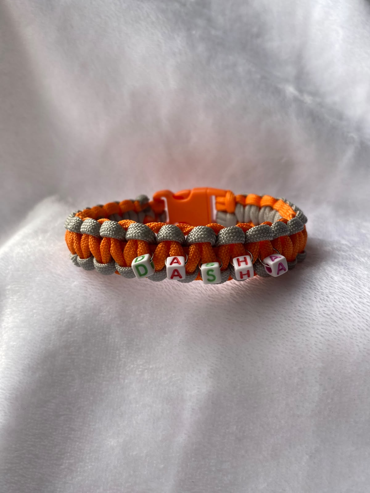
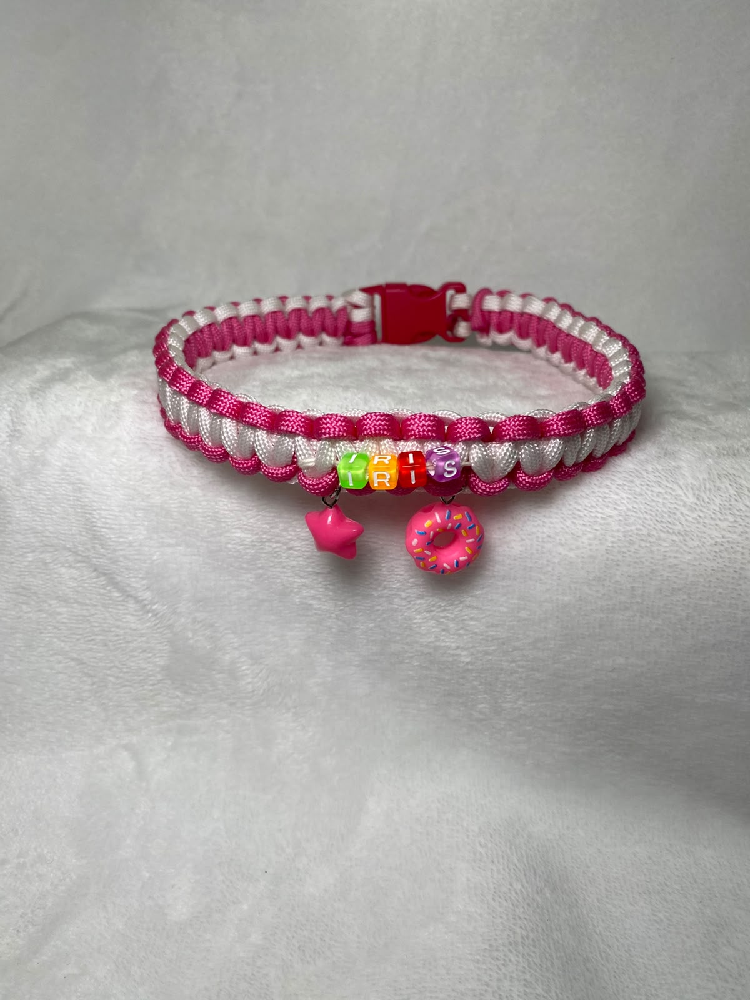
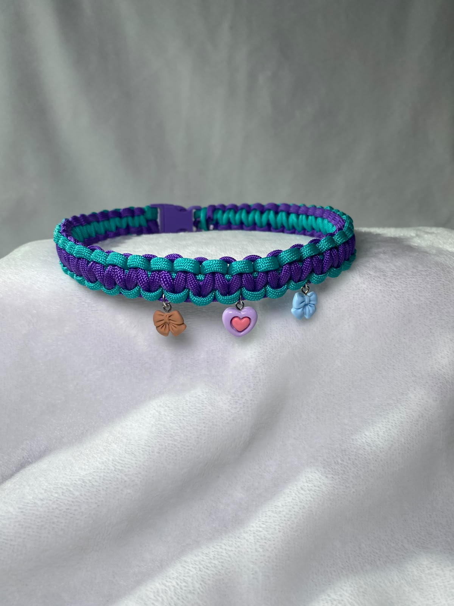
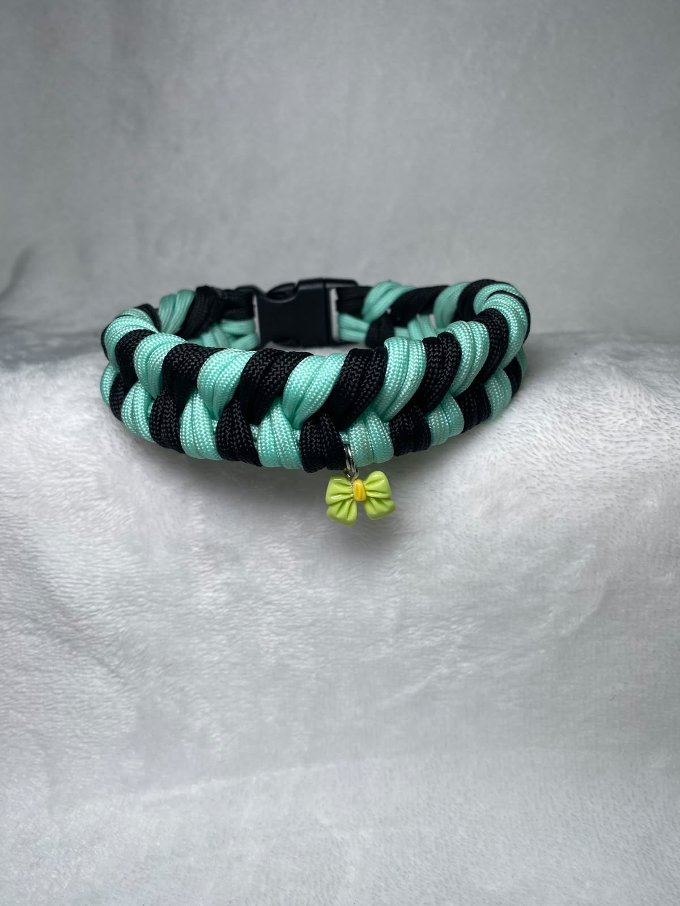

Collar pequeño
Para gatos y perros pequeños.
Consulta el precioCollares de paracord para perros y gatos, trenzados uno a uno en Medellín. Escoge modelo y colores, y te lo enviamos a toda Colombia.
Pedir por WhatsApp Ver InstagramTodos van en paracord resistente, con hebilla de colores. Puedes combinar los colores que quieras.

Para gatos y perros pequeños.
Consulta el precio
Para perros de talla media.
Consulta el precio
Con chaquiras y estrellitas para que se luzca.
Consulta el precio
El mismo trenzado, para llevarlo contigo.
Consulta el precioLo hacemos todo por WhatsApp, sin registros ni formularios.
Cuéntanos el modelo, los colores y el tamaño de tu mascota.
Te enviamos el valor, el tiempo de entrega y las formas de pago.
Hecho a mano y empacado con cariño, llega a cualquier ciudad de Colombia.
Medir toma un minuto.
Cada pieza se hace por encargo, con los colores que elijas.
Escribir por WhatsApp Ver Instagram